Marie Louise Simonsen
UI Designer/ Engineer
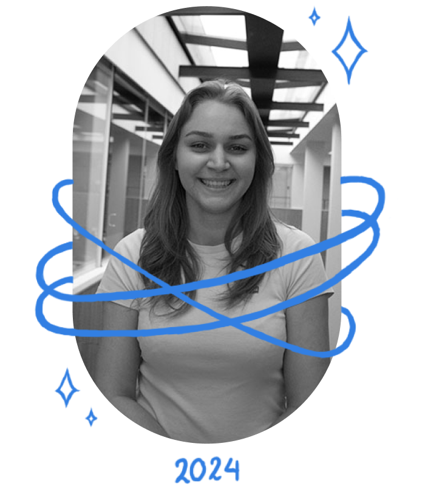 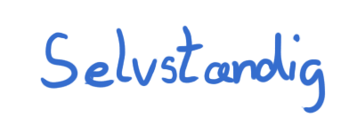
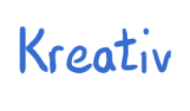
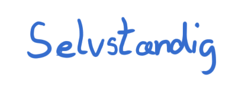
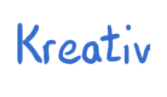
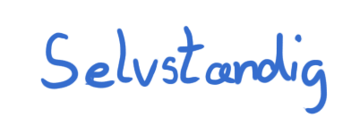
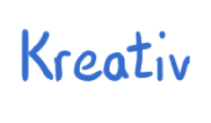
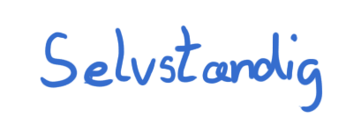
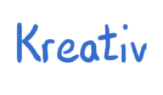
Som formand får de studerendes råd har jeg stået for at designe plakater og Airtame-visuals. Disse opgaver har givet mig værdifuld erfaring med at skabe visuelt tiltalende materialer inden for UI-design, hvor jeg har kombineret æstetik med klare budskaber.
I mit design for Sønderjyske Ishockey Support brugte jeg Figma til at lave en header ved hjælp af komponenter. Dette sikrede ensartethed og gjorde det nemt at genbruge elementer, mens jeg hurtigt kunne justere og optimere designet.
 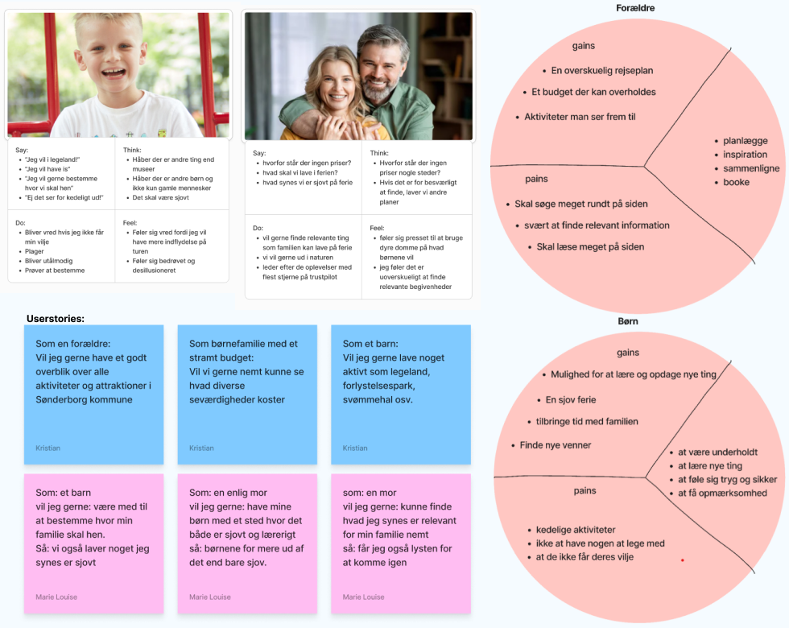
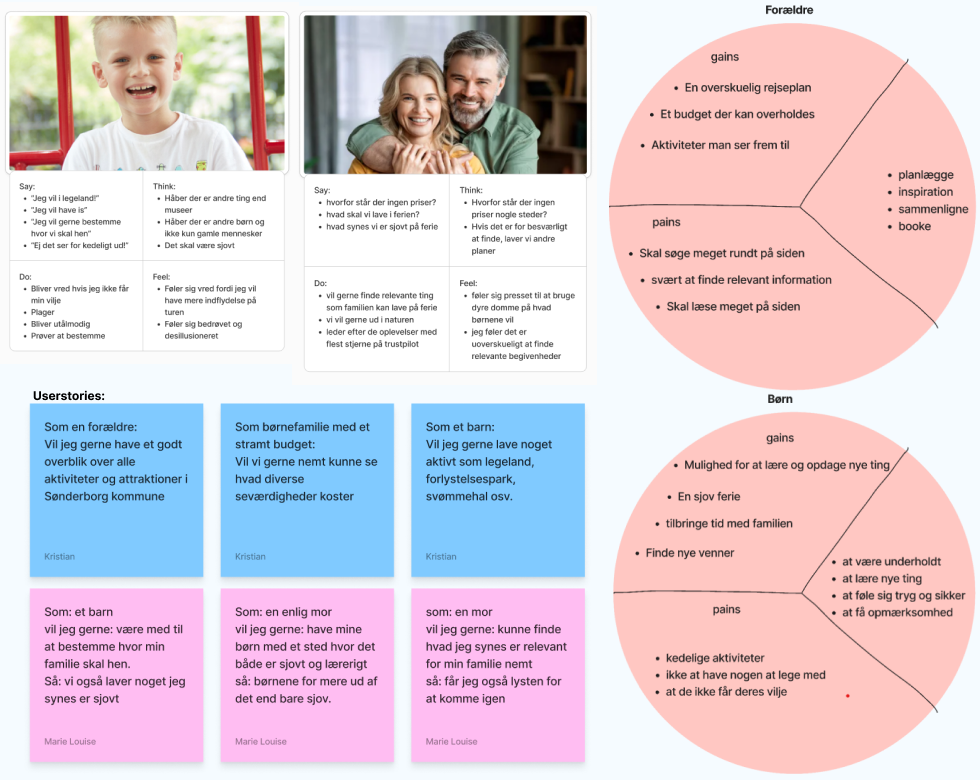
Jeg har udviklet en dynamisk og visuelt tiltalende pop-up til Destination Sønderjyllands nyhedsbrev med JavaScript. Den er designet til at fange opmærksomhed og invitere brugerne til at tilmelde sig med en empatisk besked. JavaScript sikrer en flydende og interaktiv oplevelse, der skaber nysgerrighed og tilhørsforhold, så brugerne bliver inspireret til at følge med i nyheder fra Destination Sønderjylland.